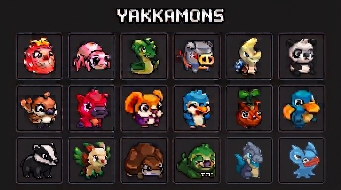

An official roster sheet has surfaced showing eighteen Yakkamon side by side — the first proper look at the creatures themselves rather than the systems around them.

The one number that gives it context
The team has said to expect roughly 50 to 60 Yakkamon at launch. Against that, eighteen is somewhere around a third of the early access roster — enough to read the art direction, nowhere near enough to plan around.
That ratio is the useful bit. It means roughly two out of every three creatures you'll meet in early access are still unseen, so any conclusion drawn from this sheet about the shape of the roster — which types dominate, how the rarities distribute, what a good starting team looks like — is being drawn from a third of the evidence.
What's actually on the sheet
Portraits, and nothing else. There are no names, no types, no rarities, no stats and no indication of which are common and which are rare. The line-up leans heavily on real animals given a chunky, expressive treatment: bears, foxes, pandas, badgers, ducks, frogs, deer, horses, a boar. Two are clearly dragons, and at least one is plant-based rather than animal — a sprouting seed creature with leaves for a head.
If there's a design thesis visible here, it's that Yakkamon is going recognisable rather than abstract. These read as animals first and monsters second, which is a different instinct from the creature-collectors it'll inevitably be compared to.
What we're not going to do with it
- Guess types from colours. The red one might be Fire. It might also be a Rock type that happens to be red. Colour-to-type mapping is a convention borrowed from other games, not something Yakkamon has stated.
- Guess rarity from position. Grid order on a character sheet is usually production order or an artist's arrangement, not a tier list. Reading the top-left slot as "the starter" or the bottom-right as "the legendary" is inventing a system that isn't there.
- Attach names. None are published, and the team has said monster names aren't final and may end up community-influenced. Any name circulating for these right now is somebody's guess.
- Assume these are the Genesis Legendaries. Storm, Echo, Bloom and Tide are pre-minted airdrop rewards with a separate supply. Nothing on this sheet identifies which, if any, of these eighteen they are.
What it does confirm
Modestly but genuinely: the creatures exist, they're finished to a consistent standard, and the art style is settled rather than in flux. For a project whose early access window is November or December, a coherent roster sheet a third of the way to the launch count is a reasonable place to be.
It also lines up with the September commitment on monster and egg utilities. If utilities land as promised, that's the release where these portraits start to mean something — types, roles, and what each actually does on a farm.